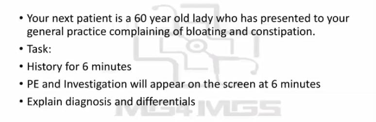
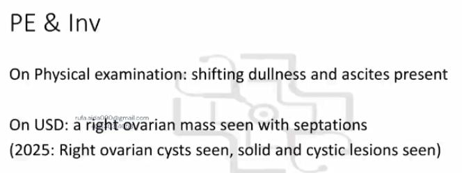
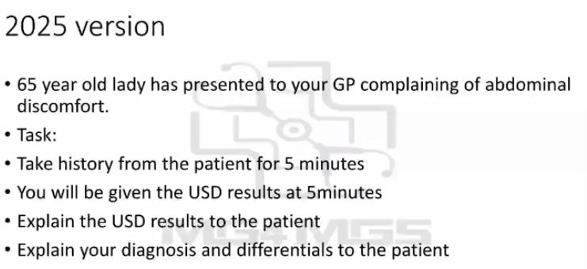
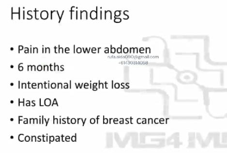
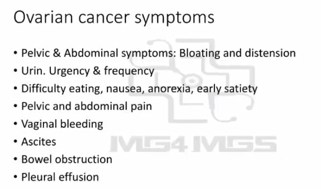

Source: Dr. Amir workshop — GIT 2026 / CLASS 4 MID GI CASE (Aug 2026 drop) · Specialty: gastroenterology
When you read the stem, identify the presenting complaint — the examiner expects a structure and a differential list pointed at that complaint. Occasionally AMC gives a stem with two complaints. Sometimes they are from the same family and one structure covers both; sometimes they differ (e.g. the AMC case of chest pain plus shortness of breath — both share the cardiac and respiratory groups: ischaemic heart disease, heart failure, lung cancer, pneumonia, pneumothorax, pulmonary embolism). The rule: choose the bolder, more prominent symptom — the one whose differential list overlaps and covers the other complaint.
A 60-year-old lady presents to your general practice complaining of bloating and constipation. Take a history for six minutes. Physical examination and investigation findings will be shown on the screen. Explain your diagnosis and differentials.
The two complaints are bloating and constipation. Bloating has the longer differential list and overlaps constipation, so use the bloating structure, adding thyroid from the constipation group (one extra question: any weather preference — heat/cold intolerance).
Objections addressed: constipation-predominant IBD exists — Crohn disease can present with constipation, not only diarrhoea. Coeliac disease usually gives greasy stools, but it stays on the bloating list regardless. Cancer causes both bloating and constipation. IBS has constipation-predominant and diarrhoea-predominant forms. So apply the standard bloating history unchanged; constipation itself needs little exploration beyond timing.
History findings: "I feel bloated; I have abdominal cramps; I have constipation; everything else is fine." Notably, in one 2023 exam the patient reported: "I'm not losing weight — I'm actually gaining weight" (the unexplained weight gain is from developing ascites).
At six minutes you receive: physical examination — shifting dullness and ascites (the reason for the weight gain); ultrasound — a right ovarian mass with septations, i.e. not a simple cyst but a complex lesion with red-flag features. In the 2025 refinement the ultrasound shows an ovarian cyst with solid and cystic components.
Ultrasound red flags for an ovarian cyst: a simple cyst has a thin wall, thin border and no internal contents. Any wall thickening, septations or solid components inside the cyst are red flags — the lesion needs tissue diagnosis and specialist management.
Top diagnosis: ovarian cancer. Ovarian cancer is called the "silent killer" — it presents with non-specific GI symptoms (bloating, constipation, early fullness) and is often diagnosed late, sometimes only when a large mass is found on ultrasound. A recurring real-world lesson: patients report that no doctor examined their abdomen — always examine the abdomen in these presentations, as a large mass would have been palpable.
A 65-year-old lady complains of abdominal discomfort. Take a history for five minutes.
Use the abdominal pain structure. Key findings elicited:
Physical examination/investigations provided: an ovarian mass with a solid and cystic lesion.
This 65-year-old is menopausal, so the O&G component changes slightly. Symptoms first:
Then period history: "When was your last period?" — expect "about 10 years ago". This is not a case for exploring menopausal symptoms; instead, the postmenopausal status plus vague GI symptoms should spark the idea of ovarian cancer. Ovarian cancer is difficult to use in an OSCE because it lacks specific history findings — but you must demonstrate you are thinking of it and ruling it out.
Symptoms and questions to screen for ovarian cancer:
Finish with PID/sexual history questions where relevant, and a good closure.
"The symptoms you described can be caused by a number of conditions, but in your case I'm worried about the possibility of ovarian cancer. Ovarian cancer usually presents with non-specific symptoms — bloating, constipation, vague abdominal pain, sometimes urinary problems. The main reason I'm concerned is your ultrasound result: we have seen a cyst/mass in your ovary which has concerning features."
Do not drown the patient in technical detail (septations, solid components); "concerning features" is sufficient. Note that even with a highly suspicious ultrasound, imaging alone is not a final diagnosis — tissue diagnosis and specialist gynaecological oncology work-up are still required (see corrections below regarding how tissue diagnosis is obtained in Australia).
Then give your differentials with reasoning — for the bloating stem, the bloating differential list; for the abdominal pain stem, the right lower quadrant pain list.
Related cases in this cluster: a bloating case trending towards IBS/coeliac, an abdominal pain case trending towards IBS/lactose intolerance, and this ovarian cancer case (2025: abdominal discomfort; earlier online-exam version: bloating and constipation).
Key strategic lesson: if you get an older woman with vague GI symptoms and cannot pinpoint a diagnosis from the history (unlike the very typical appendicitis, mittelschmerz or PID cases), think ovarian cancer and show the examiner you are ruling it out. Marking reality: a well-executed abdominal pain or bloating structure passes the station even if the key ovarian cancer questions are imperfect — the obvious ultrasound result is provided so the diagnosis can still be reached.





Reviewed by: history-taking-expert (Australian clinical supervisor, FRACP, NSW teaching hospitals) · fact-checked against the irStudy medical textbook RAG index.